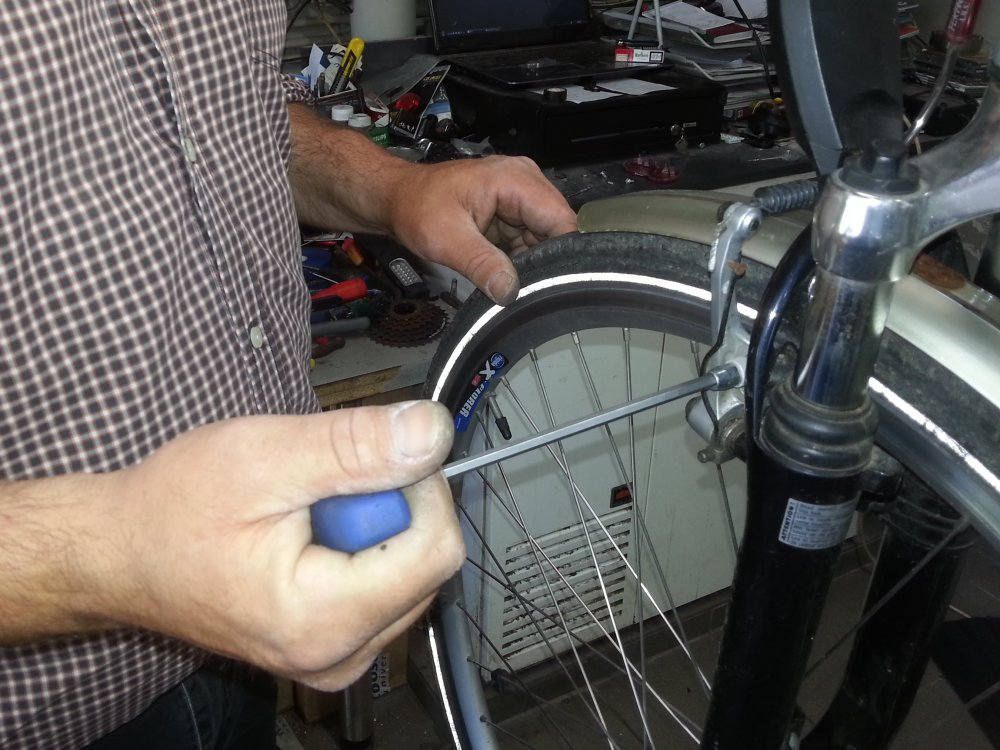
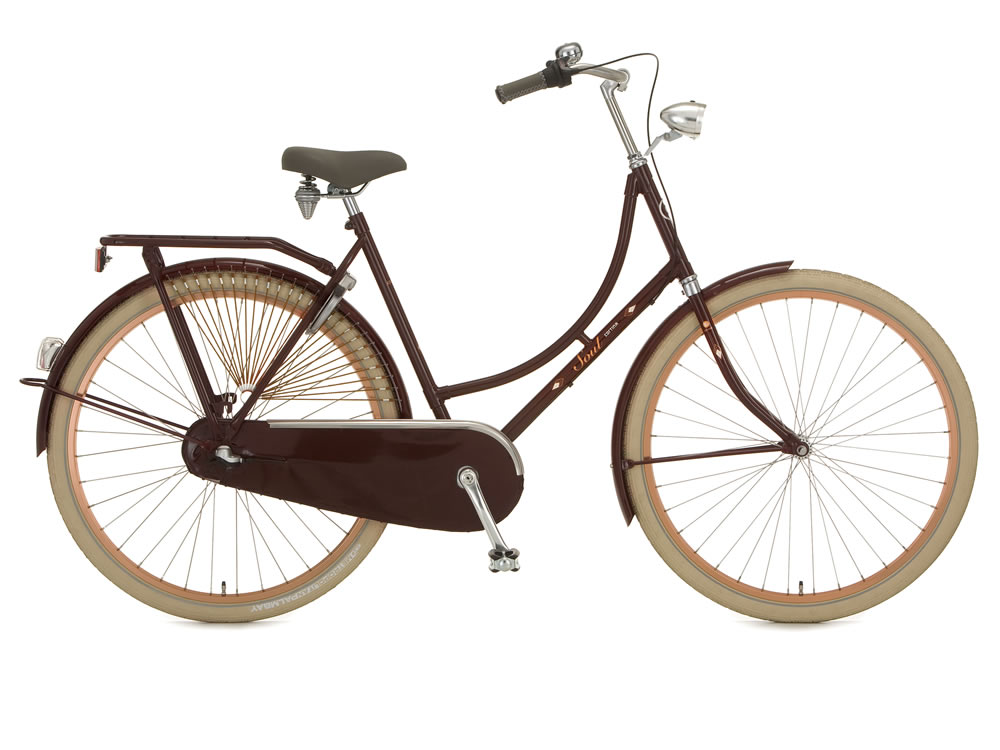
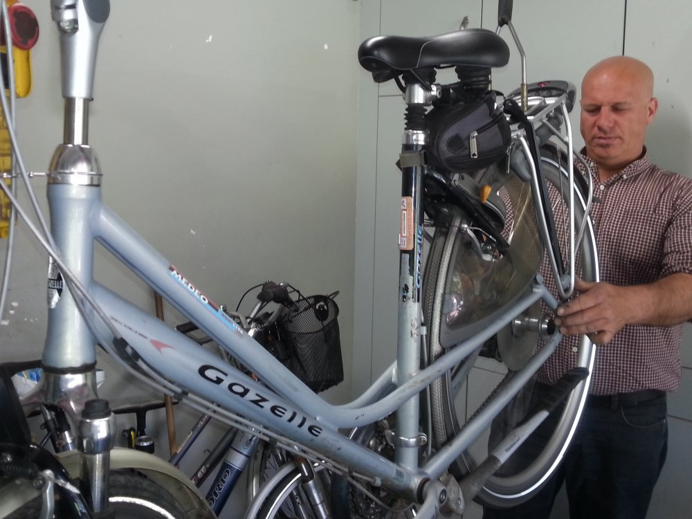

Onderhoud

U kan bij mij terecht voor het onderhoud van uw fiets. Uw fiets wordt (volledig) nagekeken, gesmeerd en bijgeregeld (remmen, versnellingen). De wielen worden gecentreerd, en de versleten onderdelen worden vervangen.
Bij grote of onverwachte kosten wordt u eerst verwittigd alvorens de kosten gemaakt worden.
Remmen en verlichting worden sowieso in orde gebracht, behalve op uw uitdrukkelijke vraag.
Verkoop

Ik geef u graag advies bij de aankoop van een nieuwe fiets.
Ook kan u hier onderdelen, binnen- en buitenbanden, kabeltjes, remblokjes, lampjes, e.d. aankopen om zelf uw fiets te repareren.
Ik kan u fietstassen, kilometertellers, zadels,snelbinders, plakkertjes, ... en zelfs gereedschap bezorgen.
Herstelling

U kan bij mij herstellingen laten uitvoeren. Van een platte band of versleten tandwielen tot het herspaken van uw wiel.
De standaardonderdelen heb ik normaal gezien op voorraad, zodat de wachttijd beperkt kan blijven.
Bij een ongeluk(je) maak ik voor u een offerte, zodat u eventueel de kosten kan verhalen.